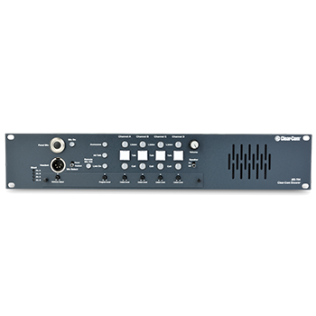

Wire Intercom
MS-704
MS-704 Control Unit
4-channel 2RU main station with built-in speaker, supporting up to 55 beltpacks or 10 speaker stations on 4 channels, automatic short-circuit protection and reset with LED indicators, visual and audible call signaling, 3 interruptible IFB channels, and individual volume controls for each channel.